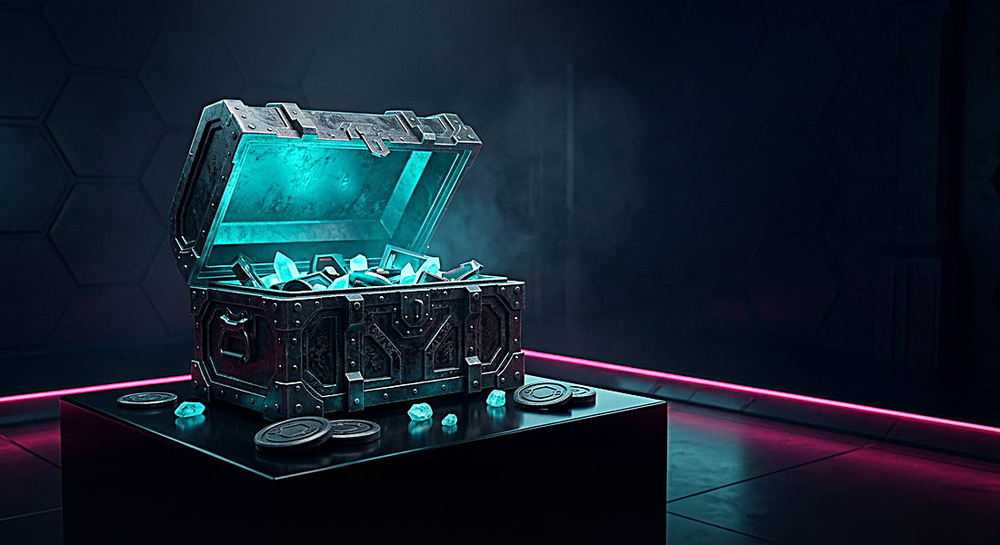

Неон-рум, в котором две команды картошек делят один зал. Режим «выжигание» (NeonDM): счёт до лимита, резкая смерть на ничьей, оружие — только то, что реально есть в бою: пистолет на старте, дробовик, гранаты и лазер — с пола. Всё остальное — косметика и твой локальный прогресс.
Лимит очков и лимит по минутам — обе настройки сервера. Ровно один игрок должен выйти в лидеры, иначе раунд уходит в резкую смерть.
Броня гасит не всё: при уроне больше единицы один пункт проходит насквозь. Возрождение — 500 мс, никаких долгих пауз.
Контроллер разрешает подбор только дробовика, гранат и лазера. Ни ниндзя, ни броню со health-паками ты здесь не найдёшь — специально.
Удар молотом — административное действие: отброс есть, очка нет. Автоубийство снимает очко.
Комната та же, что в клиенте: data/ui/backgrounds/arena_armory.png. Карточки —
один атлас data/ui/arsenal/cards_6.png, иконки в HUD берутся из тех же спрайтов, что и оружие
в бою, поэтому «красивая картинка» и «то, что летит в тебя» — это один и тот же объект.
Цифры — не маркетинг: урон, задержки и магазин взяты прямо из datasrc/content.py,
набор оружия в режиме — из src/game/server/gamemodes/neon_dm.cpp. Тест
scripts/test_map_catalog.py падает, если страница и код разойдутся.
Превью нарисованы не «вдохновением», а по данным карты: порода, смерть, no-hook, чекпойнты, спавны. Тот же генератор кормит и страницу «Карты» в клиенте.
сбалансированный заезд-введение: три спавна, три чекпойнта, четыре ямы со смертью.
хук-роут по каньону над рекой смерти: no-hook здесь почти нет, зато есть 163 плитки смерти.
зигзаг полок вверх: шесть чекпойнтов, узкие площадки, промах — вниз до самого пола.
быстрый плоский слалом: низкий потолок, 81 no-hook плитка, пять чекпойнтов подряд.
лесенка под полосой авроры: 550 плиток смерти и 200 no-hook — карта про терпение.
локальная разминка: без дропов и без очков. Именно она запускается кнопкой «разминка» в клиенте.
Те же цифры, что показывает страница «Карты» в клиенте: таблица печатается из
maps_data.js, который пишет scripts/build_map_previews.py, прочитав каждый
data/maps/*.map. Кредиты и лицензии — из data/maps/license.txt.
Прогресс хранится в конфиге клиента (cl_neonrelay_*) и подписан в названии
как локальный: он не превращается в деньги и не переносится между аккаунтами.

Ночная палитра, радиусы 16/12, рамка 2 px и величина затемнения живут в
src/game/client/neon_style.h. Меню и HUD берут значения оттуда — 231 случайный
литерал цвета из кода убран.
Фоны и карточки генерируются без псевдо-текста, буквы рисует шрифт клиента. Персонажей в фоны тоже не вписывают: портрет рисуется поверх, поэтому он не спорит с кадром.
Выпечка фонов, атласов и блюпринтов детерминирована: --check пересобирает
всё в temp-папке и сверяет побайтово. Отдельный тест сторожит совпадение сетки спрайтов
с пиксельным шагом листа.
Нет. Разминка, локальные заезды, примерка персонажей и весь прогресс работают без кошелька. Кошелёк нужен только чтобы показать, что тебе действительно принадлежит купленный раньше скин.
Чтобы пустая ниша не выглядела багом. Страница честно помечает оружие как «не в режиме» — так же, как HUD приглушает недоступную ячейку.
Да. Сердечко друга и маркеры списка наблюдателя — это спрайты из
data/gui_icons.png (сетка 12×3 по 32 px), а не глифы: им не нужен кодпоинт в шрифте,
а цвет приходит из настройки. Звёздный рейтинг карт остался глифами: на него завязан парсинг
строки в тестах, и спрайтов в скорборде нет.
Нет. «Выжигание» — это дуэль на очки с лимитом времени и резкой смертью: никакой сжимающейся зоны и никаких 60 картошек на карте. Страница не обещает то, чего в коде нет.